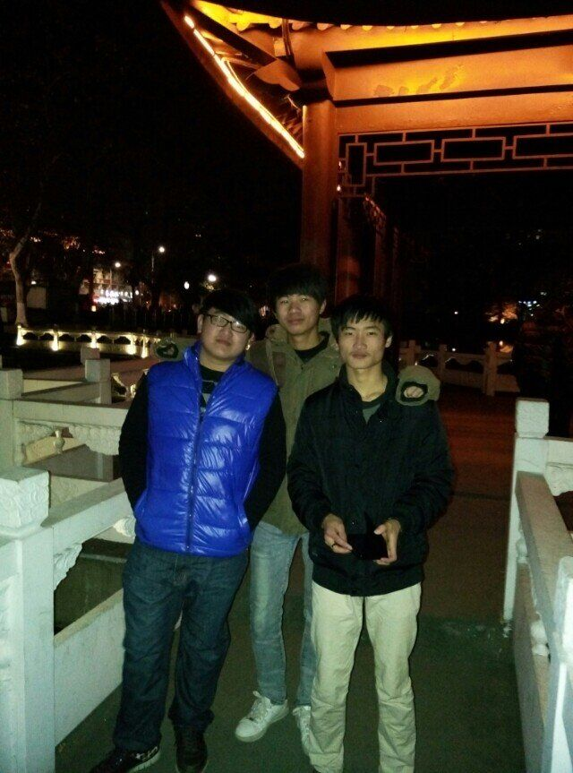
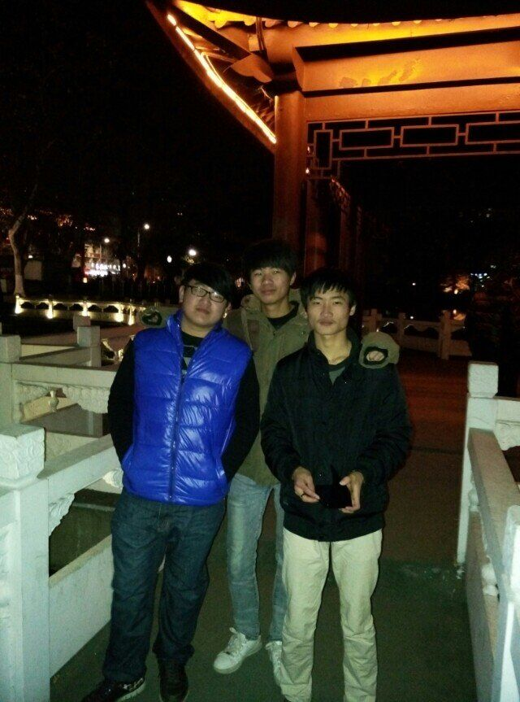

激
扬
扬

青
春
春
第一次走进这个陌生的校园，感觉好大、好美，月牙湖、凉亭、柳树、花朵……俨然错落有致，似乎是来到了一个精心设计的花园， 虽没有水榭，亦没有楼阁，但是，一水一树一倩影，足矣。怀着欣喜的心情，我开始尝试着去体验身边的新鲜事物。大学伊始，社团 的招新活动早已开展地如火如荼，面对各种各样的社团，我也充满着热情和期待，填了两个向往已久的社团招新表格，接下来就是一 轮接着一轮的面试，幸运的是，我都进了。在社团工作的日子，不能说是很轻松的，因为所选部门的原因，让我一直都很忙碌，学习之 余的时间几乎都这样被瓜分了。但是，在社团里，和别人一起工作的日子是快乐满足的，我懂得了什么是团结合作，学会了怎样去和工 作伙伴相处，在能力上也得到了锻炼，就这样，我和别人一起认真努力地工作着，有付出，也有收获。这也让我更加坚信一句话：“一 朵孤芳自赏的花只是美丽，一片相互依恃着而怒放的锦绣才是灿烂”大学生活最绚烂的一页，应该是新认识的好朋友了。同学、室友、 工作的伙伴……一年的时光不短也不长，足可以让我们互相了解，读懂彼此。曾经一度我以为，大学里没有了同桌的陪伴，没有了从前 的知心好友，我的大学生活终将会是孤独的，过去所有的一切都将只会变成美好的回忆，抚之怅然，却又无处可寻。可是，出乎意料之 外的是，我又找到了新的好朋友，可以无话不说的好朋友，从前的好朋友们，也一直保持着联系，隔着电话，我们笑着回忆曾经一起时 的快乐时光，分享在大学校园里遇见的趣事、乐事、伤心事……这样的生活很幸福，也很享受，我也很感谢上苍让我们这样真诚地拥有 彼此，无论是曾经的，还是现在的好朋友。


刚刚进入大二时的我满脸好奇的稚气总算消退了不少不会再被师哥师姐们看作小生了。因为年龄长了思想也伴随着成熟了就 这个样经过大一一年的磨练真的长大了。当然大二了新生的锐气也消磨的差不多了再也不会满怀喜悦地听讲座再不会万丈豪 情地畅谈国际民生问题再不会积极可爱地参加社团活动。大二所做的事情也就少之又少了。对于我的大二生活可以用平淡两 个字来形容。和大多数大学生一样每天做的事情就是上课、吃饭、上网和睡觉。其他就没有什么事情可做的了。所以整个大 二就过得很平淡很无所事事更加没有做什么有意义的事情。刚开学时就带了电脑来学校。带电脑来学校本来就主要作学习之 用的和我一样带电脑的其他同学也都是这样想的。但是事实上并非我们想的那样的。带了电脑确实方便了许多。利用电脑可 以方便的上网查资料学习一些自己感兴趣的知识制作演讲时的课件。但是往往有利也有弊多了电脑之后我就很少再出寝室门 。在学习之余就上上网聊天听歌看电视电影。所以其他的事情也就没有做。大好的时光也就这么荒废了。现在想想真是有些 后悔。我觉得这是自己意志薄弱的表现。所以要不断地改变自己如果这点意志东欧没有那以后还能做成什么大事。虽然大二 的半年呆在电脑前的时间比较多其他的活动参加的一比较少。但是学习我并没有荒废。每天的课依旧会上从来不会迟到或者 逃课。虽然相对于大一来说可是少了不少但是都是专业课所以学的也就相对来说比较认真。上完课回来以后有什么不懂的地 方就会和同学讨论。

在这忙碌的大三里，无论是思想上还是在学习工作上，我都收获很大。这一年比较忙碌，因为做得更多，想得也更多。这一 年也变得十分的关键，因为这一年便是大学生活的点睛之笔。 进入大学已经三年的时间了，大学毕竟不同于中学，各种思 维习惯、生活学习方式都随着环境的变化而不断的改变着。大学的围墙，是两个社会的脐带。外面是复杂多变的“大社会” ，里面是人才济济的“小社会”。 大学是一个培养自己知识与能力的地方，科学的发展在于人们在生活中能更好的应用， 而不在于让人们记更多、更复杂的理论知识，如果只是在钻课本不去实践那么就没有任何意义。 进入大三，课程主要 是专业课，平时照样还是去上课，但基本上是想学的就来上课，不想学的有的就放弃了，我知道他们并不是不爱学习，只是 对专业不感兴趣，又不知道怎么办而很迷茫。看见学风日下，班委也作出过努力，但大家都是成年人了，不那么容易管理， 只能劝说，但这样收效甚微。至于考试就基本没什么意义了，不是对所学知识的真正考验，很让人痛心，所以我也不那么看 重分数，而是看平时到底学了多少。平时上课我最不想看到的就是老师没有激情，对现实感觉很无奈的样子。但我周围还是 有很多我值得学习的榜样，学习上他们很努力，动手能力很强，常拿奖学金，生活中热情洋溢，工作中综合素质很高。 三年的大学生活，使自己的各方面的素质都迈上了一个新的台阶。在这即将挥手告别美好大学生活、踏上社会征途的时候， 我整军待发，将以饱满的热情、坚定的信心、高度的责任感去迎接新的挑战，攀登新的高峰。
 

未完待续